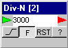

Divider 
This is a simple clock-synchronuous divider by N.
The preset value can be set in the editbox, and is activated after the ENTER key is pressed.
Counting can be done on rising or falling edge.
The counter display the actual counter value by setting it to Slow.
Reset ....
